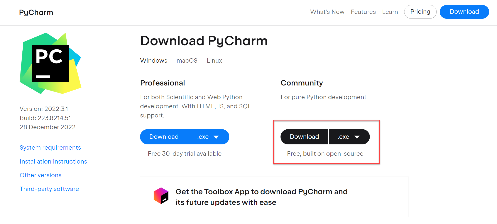
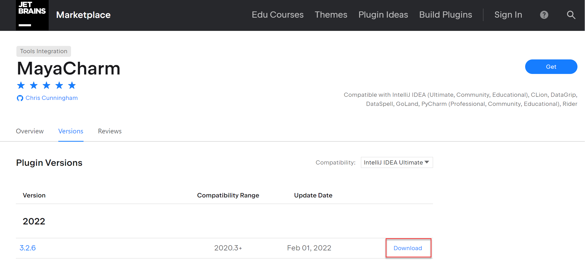
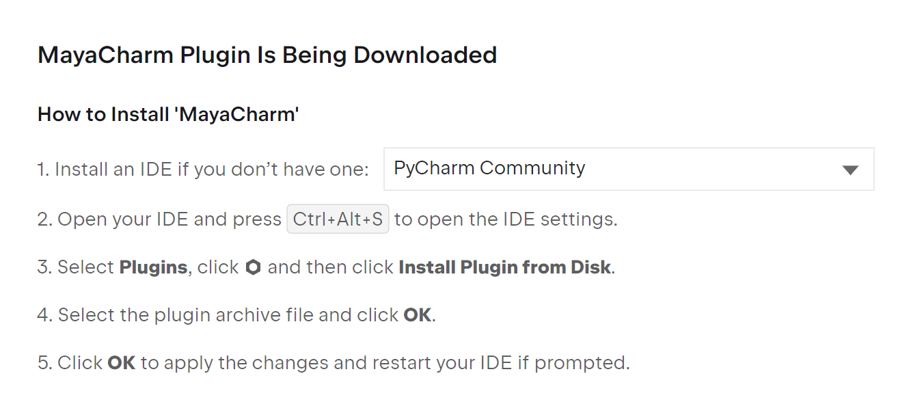
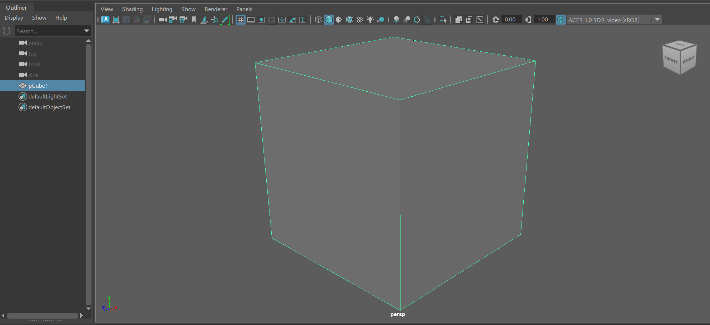

Chapter 1: Introduction
Note: This documentation is still work in progress. Only Chapter 1 is done.
Developing scripts for Maya is equally confusing and complicated. Therefore, I developed the Xwift pipeline to make developing for Maya fast and easy. I believe a lot of people will benefit from Xwift shelf to build and organize their toolkits, life is simply many, many times easier.
1.0 - Background Story (Optional)
The guy who led me into the craft of tech art once said: "One does not seek tech art for a career, tech art selects its followers." That is, Technical Art is very much like witchcraft, everyone finds their own way here, mostly by searching and a lot of trial & error.
I started to develop my own tools when I was producing my animated short, "Dazzle!", at University of Washington's Animation Research Labs. It initially started as making small fixes to continue the animation production during pandemic, because many things break when using them remotely. As time grows, I have a handful collection of tools I developed, and I needed a way to organize them.
I started developing an automatic deployment and reload script by a lot of googling, and started to build my own shelf to host all my tools. I improved my implementation of Xwift shelf from some blog posts I could find online, and had all my tools organized in one place.
Xwift shelf is not my entire toolkit, as my tools remain private at the moment. Instead, it is a good backbone that anyone can build and organize their tools upon, and should make a lot of people very happy.
1.1 - What's Xwift Shelf?
In short, I am providing you with three things:
Basically, it is a much, much more painless way to develop for Maya.
1.2 - The Old Workflow
In this section, I will briefly talk about the old workflow to develop scripts in Maya. If you are familiar with the traditional Maya development workflow, feel free to skip this section as well. However, it should be very useful for anyone who is interested in how Maya scripts work.
Running Python scripts in Maya is simple, you write some code in the script editor, and you run that script, and it should work. It sounds easy, until you start to do any serious tool that is more complicated than generate random cubes.
In my opinion, there are several downsides for developing Python scripts directly inside Maya's Script Editor:
1.3 The (Slightly) Better Way
I can go on and on, and the idea is it is just not a good idea to develop in the Script Editor. In fact, based on my industry experience, people don't do this as well, studios usually develop their code in Pycharm and pass the code to Maya using a plug-in called Mayacharm.
Pycharm is probably the most powerful Python IDE on the market, and their community version is free to use. Using the free Mayacharm plug-in, it automatically sends the code you wrote in Python to Maya's Script Editor, and run it. That is how most people nowadays develop their script for Maya. You can think of it as a better script editor, but the workflow is still more or less the same.
1.4 The Problem
However, I find this solution far from perfect.
C:\Users\hongj\Documents\maya\2023\scripts that is difficult to find)
if you want to import functions in other scripts.
There is no way to easily just develop in a Git repository and run code from there.
reload(YOUR_SCRIPT) command each time you made any changes in your code,
otherwise Maya will not use the updated script.
Xwift Shelf was developed to solve these two problems which creates the most redundant and unnecessary work during development. You can develop your scripts in a repository, and once you run it, everything just works as it intends to be. In the next section, I will introduce you to the new workflow.
1.6 The Xwift Workflow
I have no intent to completely revolutionize everything, the Xwift pipeline builds on the PyCharm+Mayacharm workflow, just making it easier.
xwift_shelf repository) instead of MAYA_SCRIPT_PATH.
playground.py and press Alt+A, which is faster than mapping the function to a button.
reload(YOUR_SCRIPT) when you make any changes, your codebase is automatically refreshed when you send your code out from the playground.py.
1.6 How does it work???
If you read through section 1.2 to 1.6, you might find the Xwift workflow deceptively simple and too good to be true. I will briefly explain how it works.
reload_util.py which automatically copies and pastes the code repository into MAYA_SCRIPT_PATH.
Essentially, it is doing the boring work in the background automatically, and because computer does this so fast, it looks like you are running your code from the repository.
Below is an example playground.py, and at this point, you should have a rough idea of what reload_util is doing.
import reload_util
REPO_PATH = "C:/Users/hongj/PycharmProjects/xwift_shelf/xwift"
reload_util.reload_from_playground(REPO_PATH)
# =============== Run your code below =============
# Here is an example to run the asset library UI.
# from asset_lib import library_ui
# ui = library_ui.showUI()
Chapter 2: Get Started
In this section, I will walk you through how to setup xwift_shelf.
Note: This looks long because is a babysit tutorial that covers in great detail. Once you get it, it is brainless to run.
2.1 - Gather Resources
Before everything, let's install some prerequisites. I will show you how to install PyCharm and Mayacharm.
To install PyCharm, simply head over to the Pycharm Official Website and download the Pycharm Community version. You can of course use PyCharm Professional, but as a PyCharm Professional user myself, I can say it does not add any benefit to Maya development except maybe you have some money to throw into the water. Just use the PyCharm Community.
Then, head over to Jetbrains Marketplace for Mayacharm and download the newest version of MayaCharm.
Install Mayacharm using the official guide, which I provided a screenshot below.

Head over to PyCharm, and on the menu bar,
File -> Settings and follow the screenshots below to configure where your mayapy.exe is located.
If you installed in the default location it is more or less located in somewhere like C:\Program Files\Autodesk\Maya2023\bin\mayapy.exe.
Now, head over to Pycharm menubar File -> Settings -> MayaCharm and configure the active Maya SDK to the mayapy you setup in last step, and port to 4434 as shown below.
To test whether you have your Mayacharm setup well, do the following:
File -> New -> Python File to make a new script.Alt+A.
import maya.cmds as cmds
# Set MayaCharm Port
if not cmds.commandPort(':4434', q=True):
cmds.commandPort(n=':4434')
# Make a cube!
cmds.polyCube()
A new cube will be created in the empty Maya scene. Your Mayacharm is fully set!
2.2 - Make the Tool
Copy all the code and paste them into your newly created notebook. This code is also available on Github in jpg_hei.ipynb (Link).
"""
JPG to HEIF/AVIF
Convert JPG shoot by camera to High Efficiency Images with metadata to import to iCloud photo library.
import heiya
import pyperclip as clip
# Custom file path override, usually just leave it blank if you use pyperclip
source_dir = ""
# Get the image location directly from the clipboard
if source_dir == "":
source_dir = clip.paste()
# This will convert all the JPG in source_dir to HEI.
# source_format = 0 -> JPG. (You don't need to change this for most of the time, you can also set to 1 for PNG.)
# target_format = 0 -> AVIF (For smaller file size but less compatible, requires iOS 16/macOS Ventura or higher).
# target_format = 1 -> HEIF (For best compatibility but slightly larger file size, requires additional extension to open on Windows).
heiya.to_hei.convert_image_in_dir_to_hei(source_dir, source_format=0, target_format=1)
Your notebook should already be saved, if not, do a quick "File - Save As" on the Notebook tool bar to make sure your notebook is created.
2.3 - Run the Code
Now, use Finder(macOS)/File Explorer(Windows) to go to the place where you store all of the JPGs you desire to convert.
2.3.1 - Copy the directory address.
Copy the directory address to your clipboard.
At this point, you might have something similar to this example stored in your clipboard. This is a SD card from a Fujifilm camera, your address might vary depending on where your photos are.
D:\DCIM\207_FUJI (Windows)
/Volumes/SDXC/DCIM/207_FUJI (macOS)
Now, you can do one of two things:
source_dir.
2.3.2 - Run the code.
Make sure to select the cell by single clicking the code.
Navigate to your tool bar, and "Cells - Run Cells" to run the newly copied code.
Additionally, you can use Shift + Enter on your keyboard to make this operation faster.
Heiya should automatically start to convert the JPGs, and will print the progress down below.

Horray! Now just drag all the HEIF/AVIF files into Apple Photos/Google Photos and enjoy amazing photos that takes up very little storage!
2.4 - Conclusion
In this section, I hope I did a fair job detailing basic usage of this tool and accounted for any obstacles you might encounter using it.
From now on, all you need to do is open the tool in Jupyter notebook, copy the folder path, and run the code. Should be pretty brainless.
If you have any question, feel free to contact me by going to my contact page (Link).
Chapter 3: Advanced Usage
For now, I have limited time and effort, so any advanced usage and how to use other functions of Heiya can be found in the following notebooks.
| Name | Link |
|---|---|
| Heiya Basic Demo | https://github.com/wu-hongjun/heiya/blob/main/heiya_basic_demo.ipynb |
| Heiya Full Demo | https://github.com/wu-hongjun/heiya/blob/main/heiya_full_demo.ipynb |
Chapter 4: Heiya Functions
This chapter will be the home to document all the functions available to call independently so you can build your own pipeline.
It is work in progress, and most information you are looking for can be found in the Advanced Usage section above.
Chapter 5: To-Do
Some potential improvements that can be done include:
pillow_heif and instead rewrite the entire tool using imagemagick.
Although I shall note that if you have a camera that already shoots HEIF, you probably don't need this tool.
ffmpeg.
Chapter 6: License
Heiya is distributed in the license in LICENSE.txt.